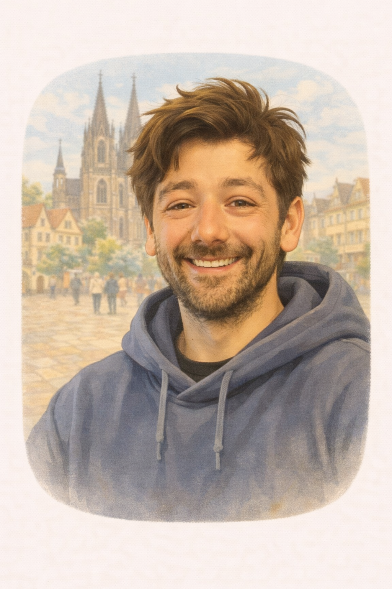

เริ่มใช้ภาษาเพื่อถามหา พูดคุย และขอข้อมูลแบบธรรมชาติขึ้น
Heidelberg / Ask things
เริ่มตั้งคำถามภาษาเยอรมันแบบสั้น แต่ใช้ได้จริง
หลังจากทักทายได้แล้ว ขั้นต่อไปคือการถามสิ่งต่าง ๆ ให้เป็น คุณจะเริ่มจากคำถามสั้น ๆ อย่าง Wie, Wo, Was, Wann และคำถามแบบ ใช่ / ไม่ใช่ เพื่อให้ภาษาเริ่มใช้งานได้จริงในชีวิตประจำวัน
Wie / Wo / Was / Wann
yes-no questions
real life scenes
after greetings
คำถามแบบถามข้อมูล และคำถามแบบใช่/ไม่ใช่
พอถามได้แล้ว บทสนทนาเต็ม ๆ จะเบาลงมาก
Lesson 03 • Questions
Kernregel
In Duitse vragen beweegt het werkwoord
Voor Thai-learners is dit het belangrijkste verschil: in het Duits verandert de plaats van het werkwoord om een vraag te maken.
Ja / Nein
Verb op positie 1
Kommst
du
morgen?
Bij ja/nee-vragen gaat het vervoegde werkwoord helemaal naar voren.
W-Frage
Vraagwoord op 1, verb op 2
Wo
wohnst
du?
Bij W-vragen komt eerst het vraagwoord en direct daarna het werkwoord.
Thai vs Deutsch
Wat in het Thai logisch voelt, is niet altijd goed Duits
Contrast 1
Thai-logica
Du wohnst wo?
Goed Duits
Wo wohnst du?
Contrast 2
Thai-logica
Du kommst aus Thailand?
Goed Duits
Kommst du aus Thailand?
Contrast 3
Thai-logica
Was du machst?
Goed Duits
Was machst du?
เริ่มจากตรงนี้
คำถามมี 2 แบบหลักที่ควรรู้ก่อน
ถ้าเข้าใจ 2 แบบนี้ คุณจะเริ่มถามสิ่งพื้นฐานได้ง่ายขึ้นมาก
W-Question
คำถามแบบถามข้อมูล
ใช้เมื่ออยากรู้ข้อมูลจริง เช่น ชื่อ ที่อยู่ เวลา หรือสิ่งที่อีกฝ่ายกำลังทำ
Wie heißt du?
Wo wohnst du?
Yes / No
คำถามแบบใช่ / ไม่ใช่
ใช้เมื่ออยากเช็กว่าใช่หรือไม่ใช่ เช่น มีเวลาไหม ชอบกาแฟไหม
Hast du Zeit?
Magst du Kaffee?
คำถามที่ต้องรู้ก่อน
คำถามหลักที่ใช้บ่อยในชีวิตจริง
ใช้อย่างไร / ใช้ในคำถามพื้นฐาน เช่น Wie heißt du?
ที่ไหน / ใช้ถามสถานที่ เช่น Wo ist das Café?
อะไร / ใช้ถามสิ่งของหรือข้อมูล เช่น Was lernst du?
เมื่อไหร่ / ใช้ถามเวลา เช่น Wann lernst du Deutsch?
W-Wörter
De belangrijkste vraagwoorden voor beginners
Deutsch
Thai
Lautschrift
Beispiel
Wer?
ใคร
krai
Wer ist das?
Was?
อะไร
arai
Was machst du?
Wo?
ที่ไหน
thii-nai
Wo wohnst du?
Wann?
เมื่อไหร่
muea-rai
Wann kommst du?
Warum?
ทำไม
tam-mai
Warum lernst du Deutsch?
Wie?
อย่างไร / ยังไง
yang-rai
Wie heißt du?
Pronomenpflicht
In het Duits moet het subject meestal zichtbaar zijn
Niet goed
❌ Kommst heute?
Voor Thai-sprekers voelt dit soms logisch, maar in het Duits klinkt het onvolledig.
Goed
✅ Kommst du heute?
Het subject du hoort hier zichtbaar te zijn.
Merksatz:
Im Deutschen braucht die Frage normalerweise ein sichtbares Subjekt.
Höflichkeit
du en Sie zijn niet alleen grammatica, maar ook sociale keuze
🙂 informell
Wie heißt du?
vriendelijk, casual, met leeftijdsgenoten of bekenden
👔 formell
Wie heißen Sie?
beleefd, veilig in service, werk, arts en formele situaties
🙂 informell
Kommst du aus Thailand?
casual vraag
👔 formell
Kommen Sie aus Thailand?
beleefde variant
Mali
ผู้เรียนชาวไทยที่กำลังฝึกตั้งคำถามเป็นภาษาเยอรมัน
Deutsch
Mali
Mali ist die Hauptlernerin. Sie stellt einfache Fragen, macht kleine Fehler und lernt Schritt für Schritt, natürlicher Deutsch zu sprechen.
ผู้เรียนหลักของเรา ฝึกถามคำถามง่าย ๆ และค่อย ๆ พูดเยอรมันได้เป็นธรรมชาติมากขึ้น
Anna
คนเยอรมันที่พูดชัดและตอบง่าย เหมาะกับฉาก warm en sociaal
Deutsch
Anna
Anna spricht klar, ruhig und freundlich. Sie ist ideal für erste Gespräche, Greetings und sichere Alltagsszenen.
แอนนาพูดชัด ใจเย็น และเป็นมิตร เหมาะกับบทสนทนาแรก ๆ และฉากในชีวิตประจำวัน
Lukas
ใช้ในบทสนทนาสบาย ๆ ในชีวิตประจำวัน
Deutsch
Lukas
Lukas ist locker, jung und alltagsnah. Mit ihm übt man einfache Fragen, Small Talk und entspannte Gespräche.
ลูคัสเป็นคนสบาย ๆ เหมาะกับ small talk คำถามง่าย ๆ และบทสนทนาในชีวิตประจำวัน

Ben
เหมาะกับฉากในเมือง ถามทาง หรือหาคาเฟ่
Deutsch
Ben
Ben ist praktisch und hilfsbereit. Er passt gut zu Stadtszenen, Wegbeschreibungen, Cafés und kurzen nützlichen Antworten.
เบนเป็นคนตรงไปตรงมาและชอบช่วย เหมาะกับฉากถามทาง คาเฟ่ และสถานการณ์ในเมือง
Emma
เหมาะกับการถามตอบแบบง่ายและการรู้จักกัน
Deutsch
Emma
Emma ist offen, weich und beginner-friendly. Mit ihr funktionieren Kennenlernen, einfache Antworten und ruhige soziale Szenen besonders gut.
เอ็มม่าเป็นคนเปิดกว้าง อ่อนโยน และเหมาะกับผู้เริ่มต้น ใช้ได้ดีในฉากทำความรู้จัก
Frau Becker
เหมาะกับสถานการณ์สุภาพหรือเป็นทางการมากขึ้น
Deutsch
Frau Becker
Frau Becker ist formell, höflich und deutlich älter. Sie passt perfekt zu Sie-Form, Rezeption, Service und respektvollen Situationen.
คุณเบคเกอร์เป็นผู้หญิงสูงวัย สุภาพ และเป็นทางการ เหมาะกับ Sie-form และฉากที่ต้องให้เกียรติ
ระดับ 1
คำถามทางสังคมที่ควรถามได้ก่อน
สถานการณ์ 1
Mali ถามชื่อ Emma
Mali: Wie heißt du?
Emma: Ich heiße Emma.
นี่คือคำถามพื้นฐานมากและใช้ได้จริงทันทีเมื่อเจอคนใหม่
สถานการณ์ 2
Anna ถาม Mali
Anna: Wie geht’s?
Mali: Gut, danke.
คำถามนี้ใช้บ่อยมากใน small talk และเหมาะกับการเริ่มคุยแบบเป็นกันเอง
สถานการณ์ 3
Mali ถาม Lukas เรื่องที่อยู่
Mali: Wo wohnst du?
Lukas: Ich wohne in Berlin.
ใช้ถามสถานที่หรือเมืองที่อีกฝ่ายอาศัยอยู่
ระดับ 2
คำถามในชีวิตประจำวัน
สถานการณ์ 4
Emma ถามเรื่องการเรียน
Emma: Was lernst du?
Mali: Ich lerne Deutsch.
นี่คือคำถามแบบถามข้อมูลจริง ไม่ใช่แค่ใช่หรือไม่ใช่
สถานการณ์ 5
Ben ถาม Mali
Ben: Hast du Zeit?
Mali: Ja, ein bisschen.
นี่คือคำถามแบบใช่ / ไม่ใช่ และใช้ได้บ่อยมากในชีวิตประจำวัน
สถานการณ์ 6
Lukas ถามเรื่องกาแฟ
Lukas: Magst du Kaffee?
Mali: Ja, gern.
คำถามแบบนี้ใช้ถามความชอบหรือความต้องการแบบง่าย ๆ
ระดับ 3
คำถามในสถานการณ์จริง
สถานการณ์ 7
Mali ถามหาคาเฟ่
Mali: Wo ist das Café?
Ben: Dort vorne.
คำถามนี้มีเป้าหมายชัดเจนและใช้ได้จริงมากในเมือง
สถานการณ์ 8
ในร้านกับ Frau Becker
Frau Becker: Was möchten Sie?
Mali: Einen Kaffee, bitte.
นี่คือคำถามสุภาพที่มักเจอในร้านหรือบริการต่าง ๆ
สถานการณ์ 9
Anna ถามเวลาเรียน
Anna: Wann lernst du Deutsch?
Mali: Am Abend.
ใช้ถามเรื่องเวลา และช่วยให้ learner เริ่มพูดเรื่อง routine ได้
ตรรกะของคำถาม
คำถามสองแบบนี้ต่างกันอย่างไร?
Wie heißt du? / Wo wohnst du? / Was lernst du? / Wann lernst du Deutsch?
Hast du Zeit? / Magst du Kaffee? / Lernst du Deutsch?
คำถามนำ + กริยา + ประธาน
กริยานำ + ประธาน + ส่วนที่เหลือ
คำถามที่ดีขึ้น
อะไรทำให้คำถามดูฉลาดกว่าเดิม?
Was?
Was lernst du?
Kaffee?
Magst du Kaffee?
Practice
Train precies de fouten die Thai-learners vaak maken
Verbpositie, pronomenplicht, du / Sie en vraagstructuur — stap voor stap.
Session progress
0 / 5 done
Maak van Du kommst morgen. een ja/nee-vraag.
verb naar vorenZet de woorden in de juiste volgorde.
W-vraagWelke zin is grammaticaal compleet?
pronomenplichtJe bent bij de dokter. Welke vraag past beter?
registerLuister en kies de juiste zin.
Lesson complete
Questions afgerond 🎉
Je hebt nu verbpositie, W-vragen, ja/nee-vragen, pronomenplicht en du / Sie geoefend.
+20 XP
questions bonus
Verb move
begrepen
Next stop
Dialogues
ฝึกพูด
ฝึกตั้งคำถามออกเสียงจริง
1. อ่านคำถามทีละประโยคอย่างช้า ๆ
2. อ่านอีกครั้งให้เป็นธรรมชาติมากขึ้น
3. ลองถามแล้วตอบเอง
4. เปลี่ยนคำตอบให้หลากหลายขึ้น
ภาษาและความรู้สึก
คำถามสั้น ๆ ก็พาบทสนทนาไปต่อได้
ในภาษาเยอรมัน คำถามสั้น ๆ มักตรง ชัด และใช้บ่อยมากในชีวิตประจำวัน ถ้าคุณถามได้ดี บทสนทนาจะไม่หยุดเร็วเกินไป
เพราะฉะนั้น คำถามไม่ได้เป็นแค่เรื่องไวยากรณ์ แต่เป็นเครื่องมือสำคัญในการเปิดบทสนทนา ขอข้อมูล และทำให้คุณคุยกับคนอื่นได้จริง
สรุป
สิ่งที่ต้องจำจากบทนี้
- คำถามมีทั้งแบบถามข้อมูลและแบบใช่ / ไม่ใช่
- คำถามนำที่สำคัญก่อนคือ Wie, Wo, Was, Wann
- คำถามที่ดีช่วยให้บทสนทนาเดินต่อได้
- อย่าแค่จำรูปประโยค ให้ฝึกใช้ในสถานการณ์จริงด้วย